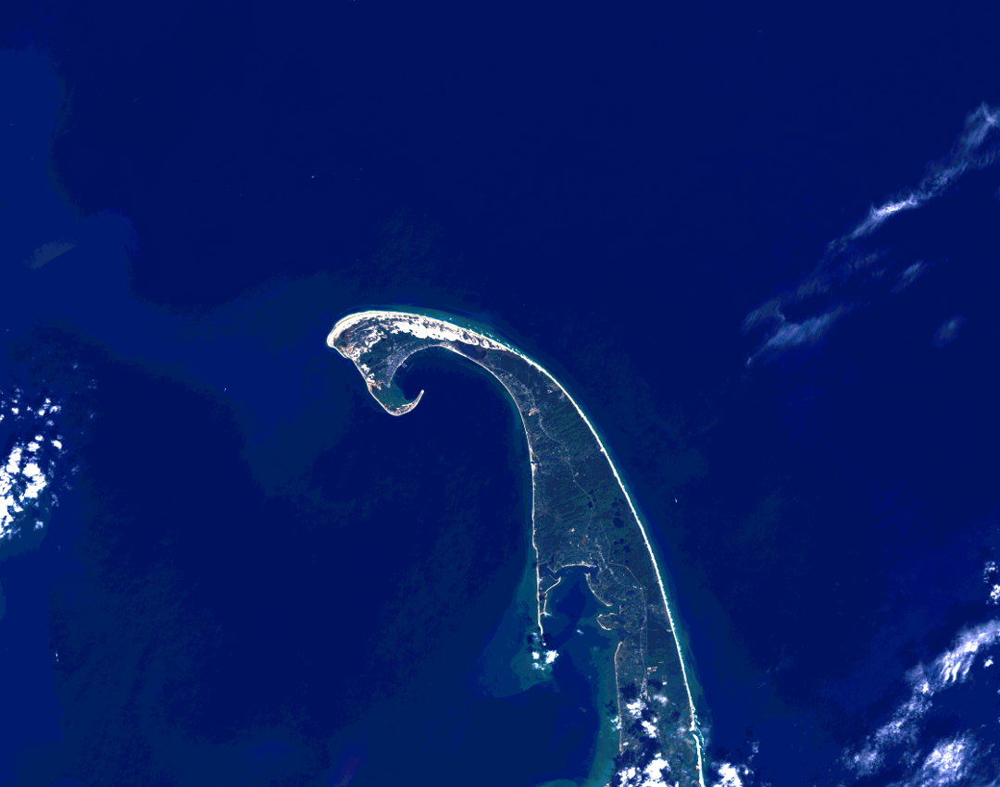
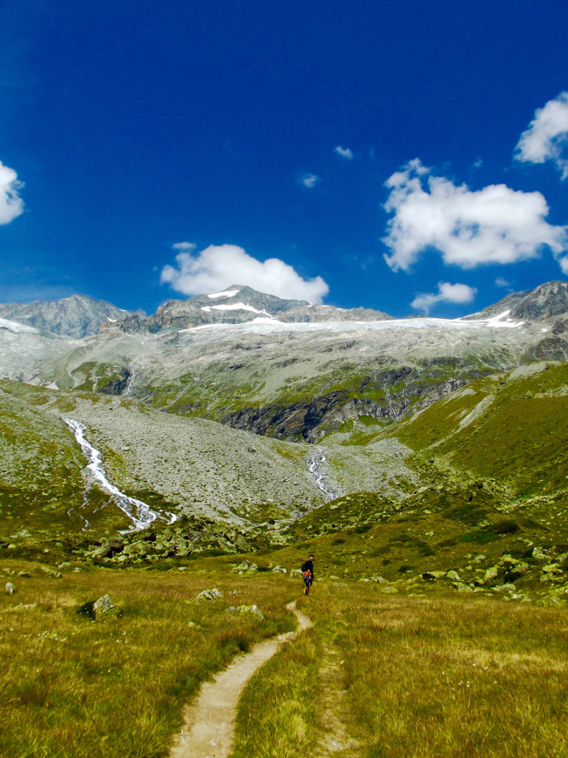

Evaluating conflict surrounding mineral extraction in Ghana: Assessing the spatial interactions of large and small-scale mining
Article in press, Extractive Industries and Society
In January 2016 my master's thesis work looking at the spatial overlaps of small and large-scale mining in south-central Ghana was accepted to Extractive Industries and Society. The abstract and figures from the paper are below, and the full text can be found online here.
Since implementation of its Economic Recovery Program in 1983, Ghana’s extractive industries have come to account for 40% of the total value of the country’s exports. An adverse impact of this increase, however, has been increased extraction-related conflict due to heightened competition between large and small-scale operators over mineral-rich lands. This paper characterizes these conflicts in the south-central section of the country by mapping the spatial overlaps between large and small-scale miners. Classification tree analysis of 2013 and 2015 Landsat- 7 and -8 imagery was used to identify small-scale mine sites. The overlaps between these sites and large-scale concessions are examined in the context of reported mining conflicts. Results reveal that there is a large amount of resource competition between the two parties, specifically, more than half (i.e., 52%) of the identified small-scale mining activity occurs within the boundaries of large-scale concessions. The northwest corner of the study area contains 50% of the identified overlaps; the southwest corner contains 40%; and the northeast corner contains 10%. In most cases, these overlaps take place on prospecting concessions. The work illustrates how mapping and quantifying areas of spatial overlap between large and small-scale miners can help stakeholders implement more effective policy solutions.

Fig. 1 Study area is shown along with large-scale mines, regional borders, rivers, and the major geological formations running throughout the area.

Fig. 2 Locations of high spatial resolution imagery from GeoEye-1, WorldView-1, and WorldView-2 used to perform map accuracy assessment on the small-scale mining maps (Landsat-7 and -8 images).

Fig. 3 Map of small-scale mining (SSM) activity derived from the classification of the Landsat-7 and -8 2013 and 2015 imagery in the context of large-scale concessions, large-scale mines, unofficial small-scale mining concessions, and unsuitable small-scale mining areas.

Fig. 4 Northwest region of the study area shown with the small-scale mining (SSM) derived from the 2013 and 2015 Landsat-7 and –-8 imagery in the context of the surrounding cities, large-scale mines, large-scale mining concessions, unofficial small-scale mining concessions, and unsuitable small-scale mining areas.

Fig. 5 Southwest region of the study area shown with the small-scale mining (SSM) derived from the 2013 and 2015 Landsat-7 and -8 imagery in the context of the surrounding cities, large-scale mines, large-scale mining concessions, unofficial small-scale mining concessions, and unsuitable small-scale mining areas.

Fig. 6 Northeast region of the study area shown with the small-scale mining (SSM) derived from the 2013 and 2015 Landsat-7 and -8 imagery in the context of the surrounding cities, large-scale mines, large-scale mining concessions, unofficial small-scale mining concessions, and unsuitable small-scale mining areas.
Demographics of small-scale mining in south-central Ghana
GIS for International Development, Spring 2015
In this analysis, I used the previously completed land cover classification from my master's thesis in conjunction with demographic data to assess the 46 districts in south-central Ghana. I located clusters of different variables using univariate and bivariate Local Indicators of Spatial Autocorrelation (LISA). The output maps from the project are shown below.
The demographic data I focused on were the percent male, female, over 65, enrolled in education, monolingual, and illiterate populations within each district. I found that areas with a longer history of mining tend to have slightly more men than women, younger populations, low participation in education, more illiterate populations, and bilingual populations, while newer areas of mining tend to have older populations, more literate populations, and mono-lingual populations.
Fig. 1 The study area used in the analysis is shown with the districts that were analyzed highlighted in orange. The Landsat-8 footprint that defined the study area for the land cover analysis is shown as well.

Fig. 2 The area in square kilometers of small-scale mining happening with in each district is shown here. The land cover classification data only went as far as the bounds of the Landsat scene, therefore there is likely an underestimation of the amount of small-scale mining occuring within the border districts.
Figures 3 and 4 show the results of the analysis. Each variable is in a separate column, the first map shows the variable displayed in each district separated into six classes using natural breaks. The second map is the output of the univariate analysis, and the third map is the output of the bivariate analysis incorporating the area of small-scale mining in each district.
When interpreting outputs from the LISA analyses, bright red areas are the centers of clusters with high-high relationships. In the univariate analysis this means the highlighted polygon has a high value of the variable of interest and is surrounded by other districts with high values of the same variable. In the bivariate analysis, a polygon highlighted in red means the district has a high area of small-scale mining surrounded by high values of the variable of interest.
Light red areas indicate high-low relationships, a low value surrounding by high ones. Bright blue indicate low values surrounded by other low values, a low-low relationship, and light blue areas indicate a low-high relationship, low values surrounded by high ones.
Fig. 3 The output maps for percent male, percent female, and over 65 are shown.
Fig. 4 The output maps for percent monolingual, percent enrolled in education, and percent illterate are shown.
NASA Develop - North Carolina Ecological Forcasting
Summer 2015
My team worked with APNEP, Albemarle-Pamlico National Estuary Partnership, to try and develop a methodology that would allow the organization to more rapidly and consistently detect changes in wetlands throughout the watershed. We used Landsat-5, -7, and -8 data to analyze wetland health from 2000-2015 using a series of vegetation indicies. Image preprocessing and analysis was performed through a python script I wrote. Images and code snippets from the project are shown below.
Fig. 1 The study area of the project in North Carolina and southern Virginia.
56 Landsat scenes were used in the analysis because we wanted an image from each season for each of the 15 years. The script calculates top of atmosphere reflectance and three vegetation indices on each Landsat scene to gain and understanding of wetland health across the region.
The code block below shows the function written for calculating NDPI (Normalized Difference Pigment Index), an index that is known for disinguishing wetland areas from other land cover types.
"""
The NDPI_8 function is used to calculate wetland extent on Landsat 8 data. The function does the same thing the
NDPI_457 function does but uses the Red and Blue bands corresponding to Landsat 8.
The function calculates this band ratio and saves the output as a new raster image.
"""
def ndpi_8(Band2, Band4, outdir = False): #inputs should be TOA reflectance
#Set the input bands to float
blue = arcpy.sa.Float(Band2)
red = arcpy.sa.Float(Band4)
#Calculate the GNDVI
L8_ndpi = (red-blue)/(red+blue)
#Create the output name and save the GNDVI tiff
name = Band2.split("\\")[-1]
GNDVI_name = name.replace("_B2","")
if outdir:
outname = core.create_outname(outdir, GNDVI_name, "ndpi", "tif")
else:
folder = Band7.replace(name, "")
outname = core.create_outname(folder, GNDVI_name, "ndpi", "tif")
L8_ndpi.save(outname)In addition to this function, Green NDVI (Green Normalized Difference Vegetation Index) and NDPI (Normalized Difference Pigment Index) were calculated on each scene. The indices allowed us to gain and understanding of how wetland health has changed over the time series.
The final maps show study areas that identify changes in wetland health over the time series. NOAA C-CAP data is used to define wetland extent within the area of interest and then changes in the NDPI index are displayed below.

Fig. 1 This area showed now change in wetland extent over the years, the vegetation health in the wetlands decreased over the course of the study period.

Fig. 2 This area experienced a decline in wetland extent thoughout the years as well changes in the overall vegetation health within the study area.
Educational attainment of 18 to 24 year olds
Percent of young adult population at each education level per county
The map below shows the education level of 18 to 24 year olds in 2014. The data comes from the American Community Survey five year estimates. Different education levels can be turned on and off based on user interests. When two or more levels are turned on the county is symbolized by the level with the maximum value in that county. The four levels of education are less than a high school diploma, a high school diploma (or an equivalent), an associate’s degree or some college, and a bachelor’s degree or higher.
I relied heavily on Nathan Yau's Flowing Data’s tutorial to make this map. I’m new to interactive data visualizations and D3, and despite the dataset being main/only difference between my map and the tutorial, creating this map still proved to be challenging and a great learning experience. Along with the turtorial, Mike Bodstock's choropleth map example also helped me get a handle on this and play around with different ways to create the map. I used R to wrangle the data into the format that I wanted (thanks again to Flowing Data for those R tutorials) and D3 to visualize it.
The map gives a sense of the geographic distribution of the general education level of young adults throughout the U.S. It makes it pretty clear that most young adults have made their way through high school and have gone beyond. Not surprisingly, the areas where the highest level of educational attainment for the majority of people is less than a high school degree tend to be in more rural areas, whereas people with the associate's degree or some college tend to live around cities.
In the two counties I have spent the majority of my life in - Worcester and Middlesex, MA - the majority of young adults have their associates degree or some college, which makes sense due to the age of the population examined here and the close proximity of colleges in and near the counties.
Earth Images
Not only does the data captured by NASA's earth observing satellites offer great opportunities for analysis, it also makes for some beautiful images. I used Landsat-8 data and GIMP, an open source image editing software, to create the statellite images seen below, and I think placing these images next to ground photos taken in those locations on the ground offers a really interesting perspective.

Venice, Italy - Left: Landsat-8 564 false color image captured 4/19/2015; Right: Photo taken in August 2008.
The band combination in the left image uses the NIR (5), SWIR (6), and Red (4) bands. Urban areas appear grey in this band combination, seen on this fish-shaped island of Venice proper in the center of the image. Vegetation shows as shades of browns with darker colors indicating a higher soil moisture content, a little bit of which can be seen in the in the coastal areas above the island.

Athens, Greece - Left: Landsat 8 natural color image (753) captured 9.11.2015; Right - view of Lykavittos Hill from the Acropolis captured late August 2015.
The image on right shows a burn scar (red patch) in the lower right portion of the image due to July 2015 fires throughout southern Mount Ymittos.

Provincetown, MA. True color composite (432). Landsat 8 OLI; October 8, 2015.
The very tip of Cape Cod, MA can be seen in this image in true color. The red, green, and blue bands are used to show what the area looks like in the visible spectral range.
Travel Map
I have had the opportunity to travel to some amazing places! Below is a map that shows where I've been along with some pictures I took along the way.

Zermatt, Switzerland
Burano Island, Italy
Florence, Italy
Chile/Argentina border
Patagonia, Chile
Cinque Terre, Italy